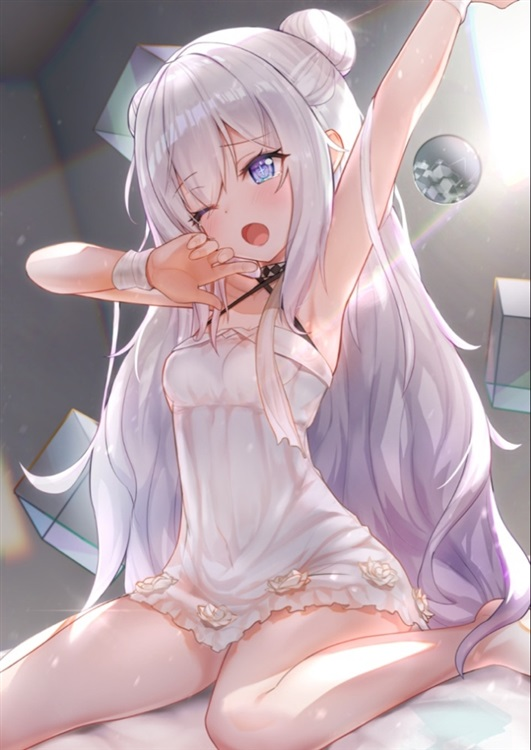

第十八章 直视我，崽种
[等等~]
砂糖立刻被触感类似冰水的某种液体包裹，眼皮变得格外沉重，无法再继续睁开了。
再度降临的黑暗中，有细微的光芒穿透阴霾直达眉间。
她能感受到掌心传来了冬日暖阳般的温柔，虽然令人困惑，却让她躁动的心脏略微平静下来。
因为【我】的意识确实存在，不过目前的状况还是无法掌握。
所看到的那副惨状是怎么回事？那个声音说的话又是什么意思？
这才不过刚刚开局而已，复杂难懂的信息就已经处理不过来了。
真心想吐槽把自己送来这个异世界的神明，对新手来讲初始难度未免高得离谱啦。
四肢不听使唤，完全用不上力，甚至连张嘴说话都做不到。
虽然保留有意识值得庆幸，但就像遇到了永远不会结束的鬼压床。
空气在呼吸的时候通过气管，她才发现那些刺激鼻腔的异样血腥味总算消失了。
应该不久之后就会恢复正常了吧，现在也只能先这样自我安慰了。
砂糖利用类似催眠的心理暗示手段，半强制地迫使自己冷静头脑。
大概是巨量压力使精神负担过重的原因，倦怠感一口气袭来，无奈之下，她只好委身于睡意的波涛当中。
这期间她的五感也变得很奇怪，一直能够听到女性温柔的说话声，可惜听不清内容讲了些什么。
由于找不出线索，感觉稍微有点吓人。
而且就像是在水中听到的余音一样，那仿佛笼罩在浓雾之中的模糊，更是增添了几分恐惧。
…………
……
时间在这片混沌中没有了意义，也许过了几分钟，也许过了数小时，砂糖才积攒到了足够打破困境的力气。
少女微微动了动睫毛，猛地睁开眼睛，可是高强度的明亮导致她双瞳觉得刺痛，立马条件反射般闭上了，随后再试图慢慢睁开。
好不容易挣脱虚无，点亮视野后，映入眼帘的场景并非在图书馆阅览室，而是某片精美装修过的陌生天花板。
她很快便反应过来，此时自己正仰面平躺在一张柔软舒适的大床上。
“好重。”
稚嫩的嗓音顺利从喉咙发出，全身恢复自由的这份畅快之情，对她来讲如同间隔了无数个日夜。
手脚的感觉依然存在，只不过肚子那里貌似被重物压着，想活动一下都办不到。
为了确认那点，砂糖移动眼球，将自己的身体纳入视线范围。
结果大出意料之外。
压住她的不是别人，而是拥有一头赤红长发的骑士薇莉娅。
不晓得出于哪种理由，她就像个负责照料的护理人员坐在床边，趴在砂糖的身上酣睡正香。
头恰好靠在了腹部的位置，应该是把砂糖肚皮当做枕头用了。
不仅如此，就算她睡得很沉的样子，也还是紧紧握住砂糖掌心不肯松手
被这样亲密地贴着，难怪完全动不了啊。
“莉娅姐。”
轻声叫了名字，顺带尝试把手从她那里抽出来。
“嗯…………”
睡梦中的薇莉娅闻声直起腰，迷迷糊糊抬头望向砂糖，从眼神迷离的表情猜得出她实际上还在梦乡里。
典型的‘醒了，但又没完全醒’。
“莉娅姐，快醒醒，。”
“啊。”
那半梦半醒的姿势持续了三四秒，揉揉眼睛，直到被砂糖高声呼唤这才给彻底惊醒。
“小砂糖！”
没等砂糖询问状况，薇莉娅立即就激动地搂住了她，看样子相当高兴。
“太好了，你终于醒了，有哪里不舒服吗？”
“只是做了一个奇怪的梦，不用担心。”
“都昏睡两天两夜了，我怎么可能不担心嘛。”
“两天！？”
进入那个梦境的体感时间顶多也就几个小时，去图书馆找资料都还是刚刚发生的记忆，可结果突然就被告知自己昏迷了很长时间。
这个事实让砂糖惊出了一身冷汗。
“就是啊，当时怎么叫你都没反应，可把我吓坏啦。”
“我们不是在图书馆么？”
“当然不是啦，小砂糖看着书突然就晕倒了，于是就把你带回了骑士团总部，我们连治愈魔法都用上了，可惜不起作用呢。”
“那这里……”
“是我的宿舍喔。”
砂糖环视周围，房间整体不算很大，简洁对称凸显沉稳，功能的空间划分和位置布局体现严谨。
只保留了几件必要的家具和衣柜，剩下的空间几乎摆满各种各样的可爱毛绒玩偶。
床头的书桌边放着一个装满水的杯子，还在冒着腾腾热气。
“莉娅姐一直守在这吗？”
“嗯，因为骑士团都是些男人嘛，让他们看护小砂糖不安全，所以由我来照顾你。”
“可是……骑士的工作，没问题吗？”
回想起来一直都是单方面接受她的帮助呢，总是给别人添麻烦真不好意思。
在砂糖尚未苏醒的这段时间里，似乎都是薇莉娅负起责任在照管她。
“没事儿没事儿。”
“抱歉。”
“不用在意，小砂糖的事情才是最重要的，况且团长也专门给我批了假期哦。”
看着砂糖有些内疚沮丧的神情，薇莉娅站起来，转身将那杯时刻准备好的热茶递了过去。
“我总是给你们制造麻烦……”
“别这么见外嘛，只要能够帮上小砂糖的忙，我很乐意这么做。”
“嗯，谢谢莉娅姐。”
砂糖掀开被子伸手去接茶杯，可是薇莉娅的反应却很奇怪。
她不自在地咳了咳，轻轻点头，然后又扭过脸，耳角微微泛红。
直到砂糖低头看了一眼自己，全身上下现在就剩下一层单薄的女性内衣，可以说和赤身**没有区别了。
原来是这种原因啊！
难怪薇莉娅会有奇怪的举动，由于砂糖衣不蔽体，大片白皙的肌肤完全暴露，很过分的是布料似乎还是略透明的情趣内衣，连私密部位都隐约可见了。
注意到自己走光的砂糖又快速滚进被窝里，棉被厚实地裹住全身，只留了一颗憋到绯红的脸蛋在外面。
“我的衣服呢？！”
“诶~那，那个啊，拿去洗了，对……┐(‘～`；)┌”
“直视我的眼睛，莉娅姐。(▼皿▼#)”
